Assignment 6: Classification using Least-Squares and LDA
Deadline: March 14, 2017 at 1pm
Part 1: Least Squares
Write a program in python to implement the least-squares
method for classification. Follow the below instructions.
- Generate classification data of two classes by using this code:
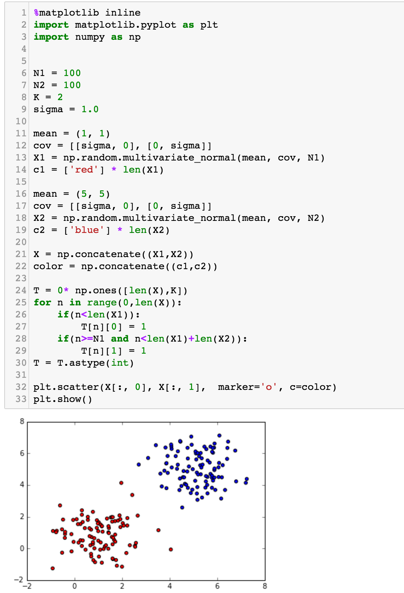
- Write code to estimate matrix W using the least-squares
method.
- Draw the decision line, similar to:
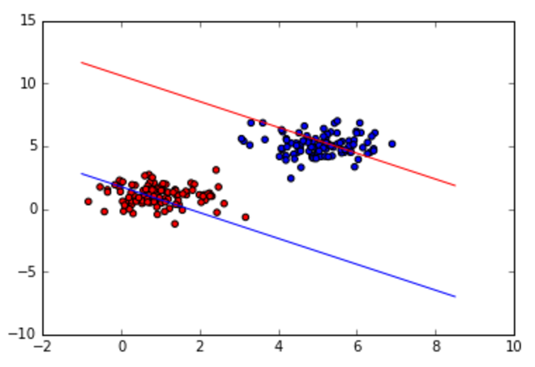
- Change sigma to 7.0, and draw the decision line.
- Discuss how the classification performance is affected
by it.
- Keep sigma=7.0, but now change N2=10. Draw the decision
line.
- Discuss how the classification performance is affected
by it.
- Set sigma=4.0 and N1=N2=100. Change tn to {-1, +1}, and
draw the decision. You should have something similar to:
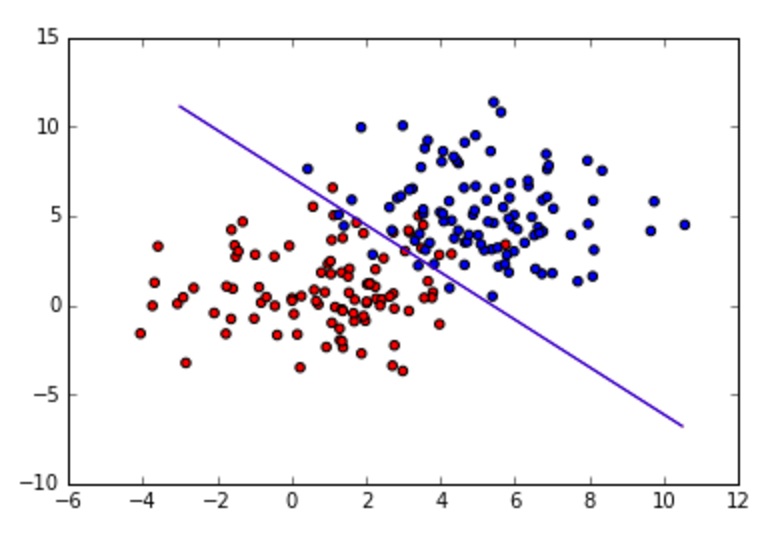
- Set tn back to {0, 1}, sigma=1.0. Modify the code for
generating the data so that it includes outliers as shown
below (the number of outlier points = 100, the same N2):
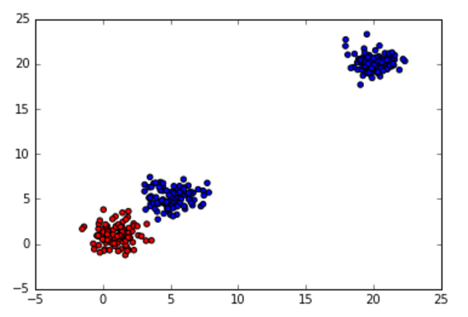
- Draw the decision lines (the left figure is when tn is
{0,1}, and the right figure when tn is {-1, +1}):
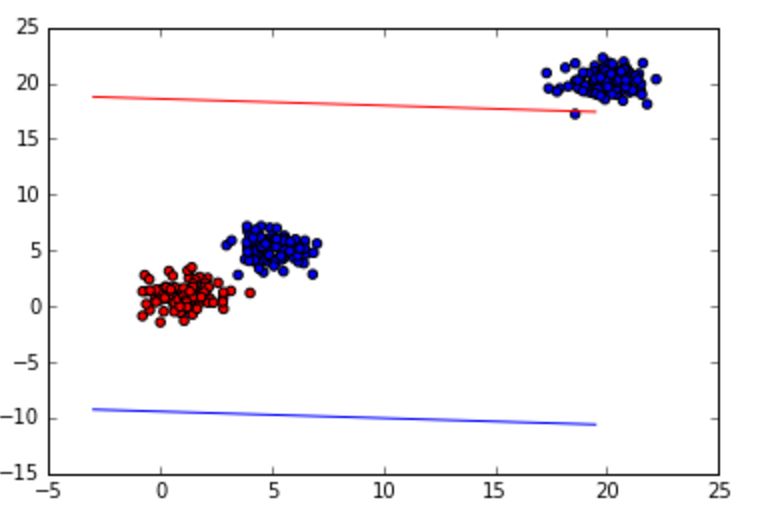
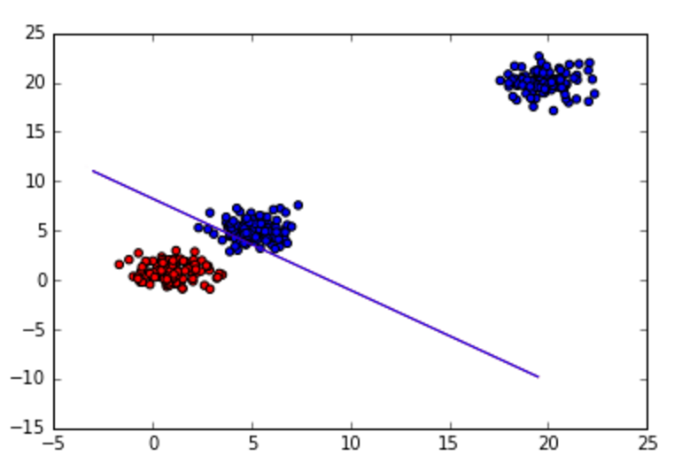
- Explain what's wrong with the lines.
- Write code to generate 3 classes, where the means of
the 3 clusters are located at (1,5), (5,10) and
(10,5). Set sigma = 1. Display the
result. You should have something similar to:
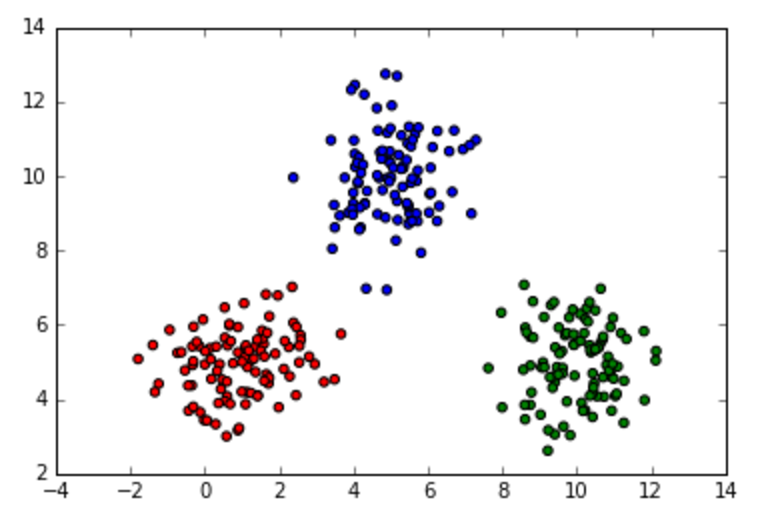
- Compute W, and draw the decision lines:
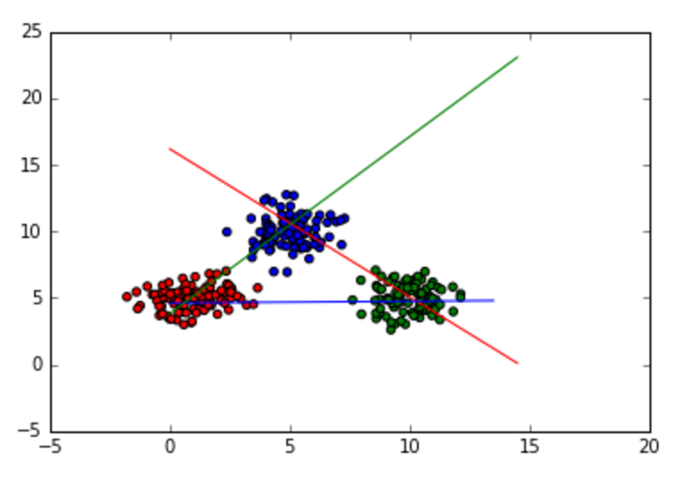
- Change the means to (1,5), (5,10), (10,15), and draw
the decision lines.
- Concerning the decision lines, discuss what you observe.
Part 2: Fisher's Linear Discriminant Analysis
- Generate classification data of two classes with the
same numbers of points for each class:
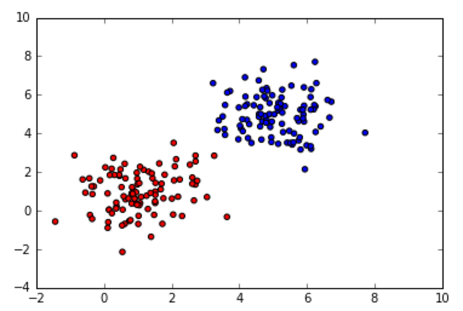
- Write Fisher's LDA to estimate vector w, and draw the
decision line:
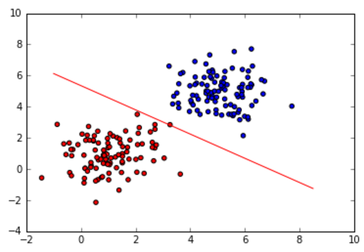
- Generate data, similar to the figure below (where the
red population is 10 and blue's population is 200; the first
principal axis of red is vertical and the first principal
axis of blue are horizontal):
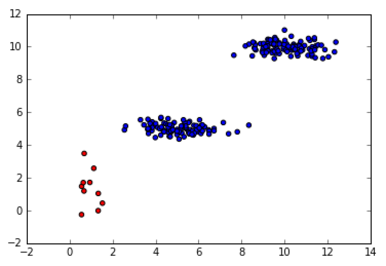
- Use the least-squares method to compute matrix W, and
draw the decision lines:
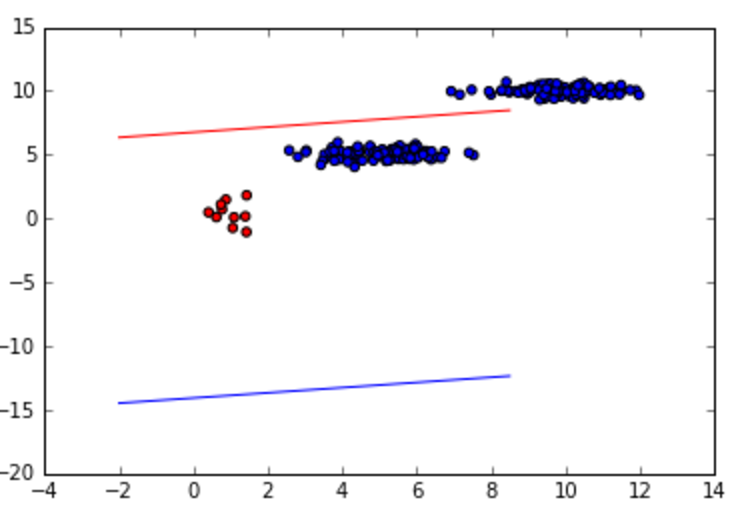
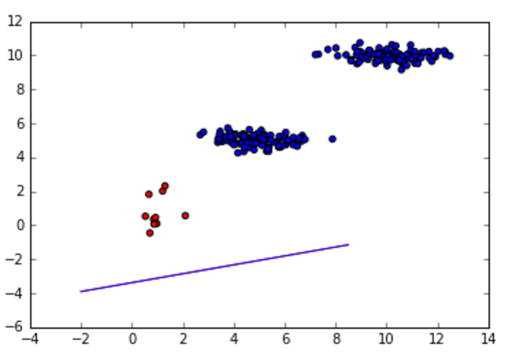
- Use Fisher's LDA method to compute vector w, and
draw the decision line:
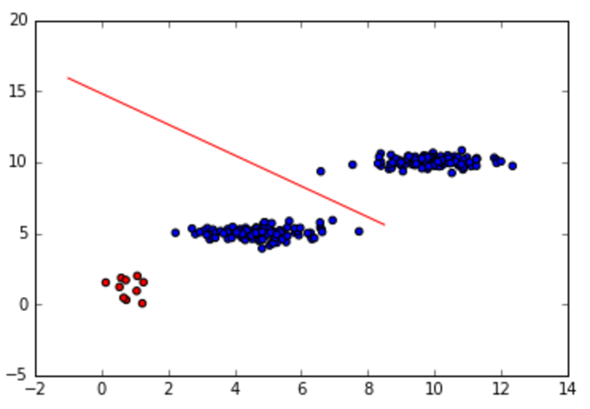
- Discuss how different LDA compared to the least-squares
in terms of correctness/robustness in the classification task.
Submission
Submit both your code and results in an ipython-notebook format via Canvas by
the deadline.